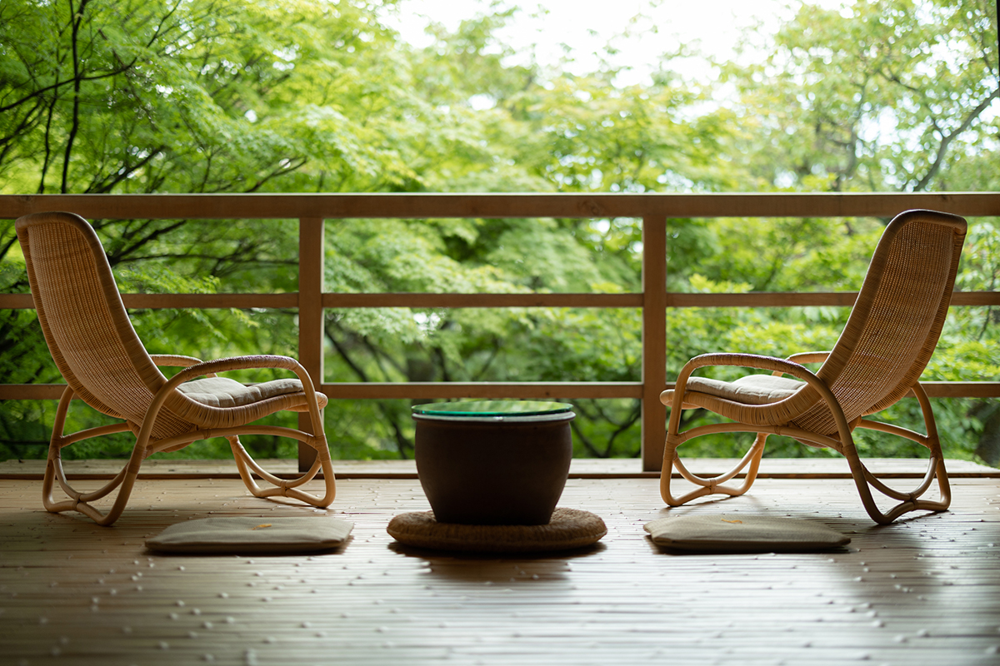
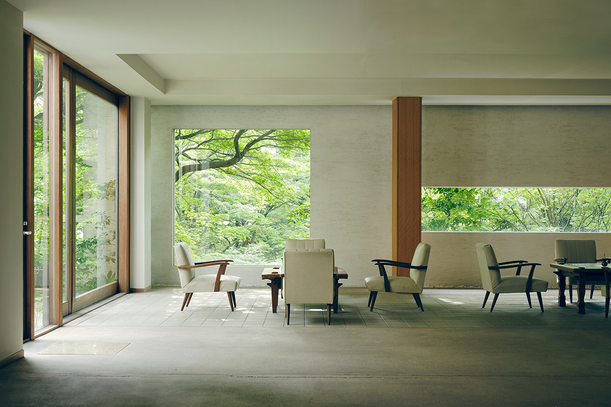
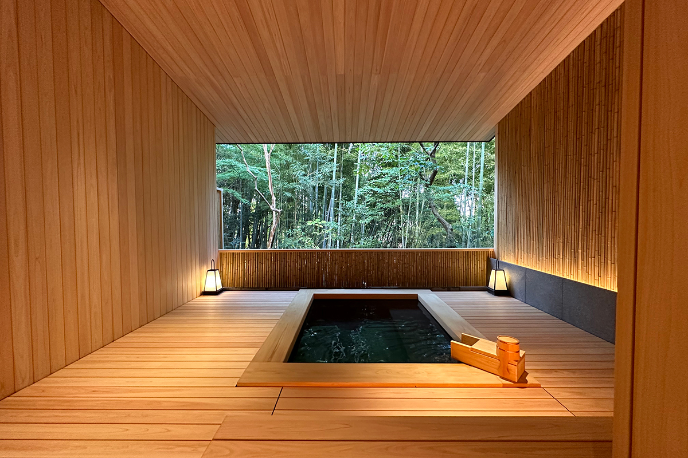
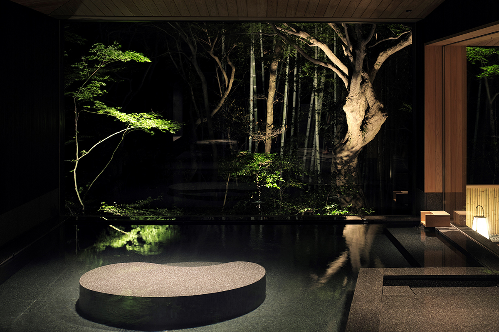
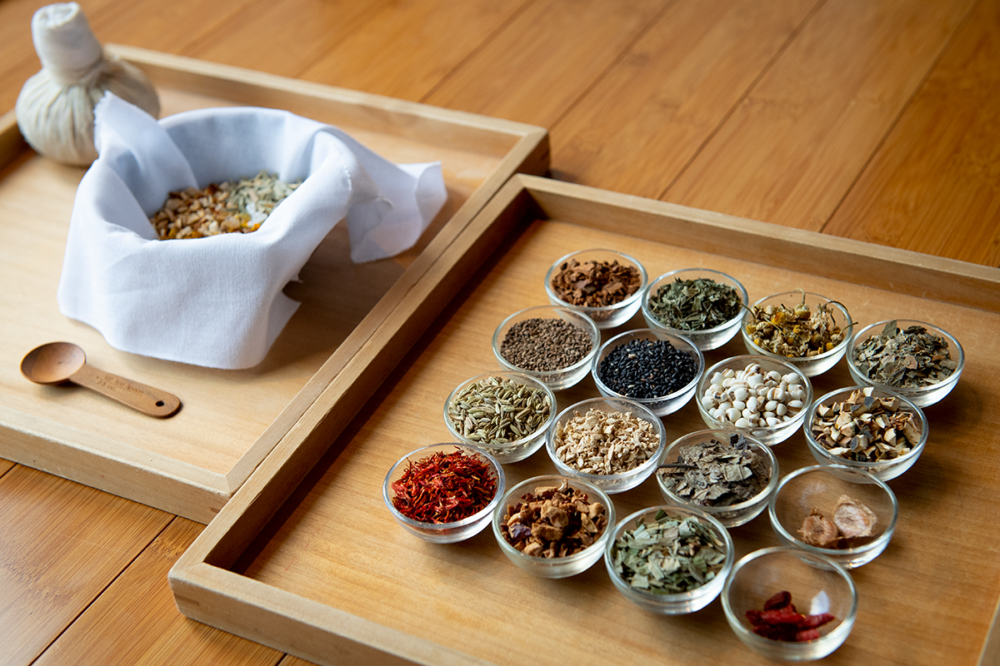
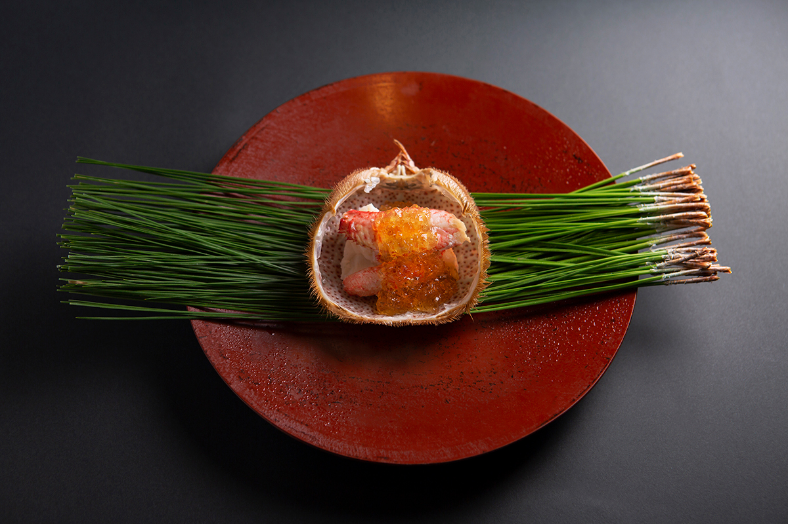
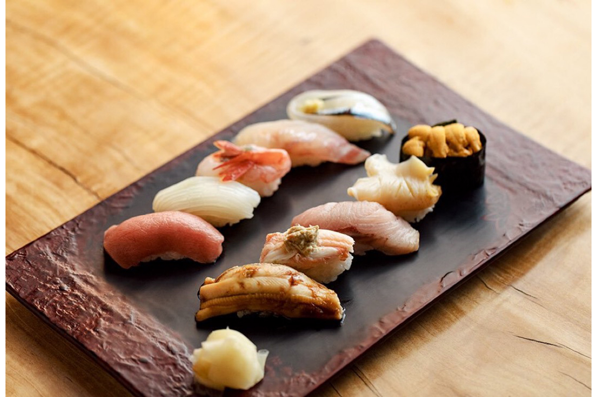
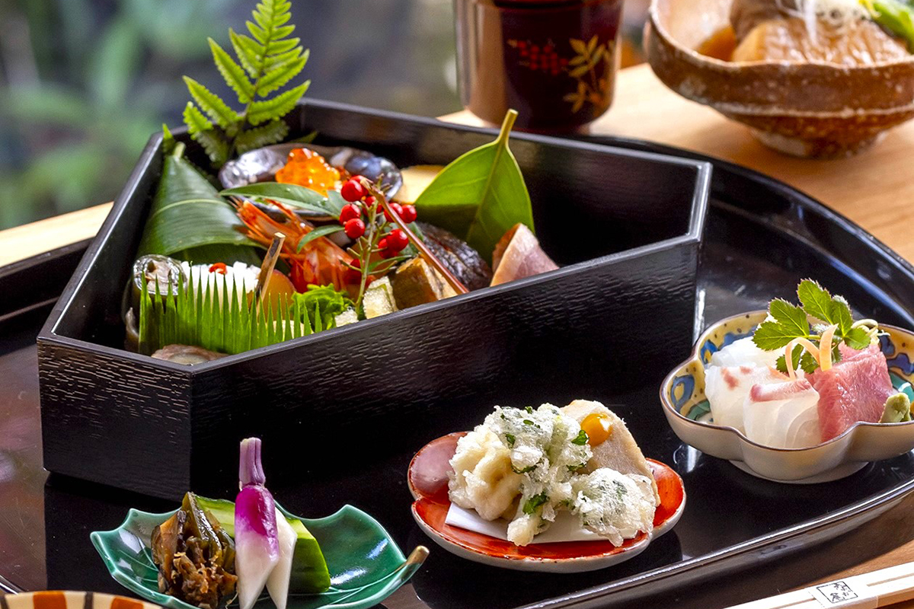
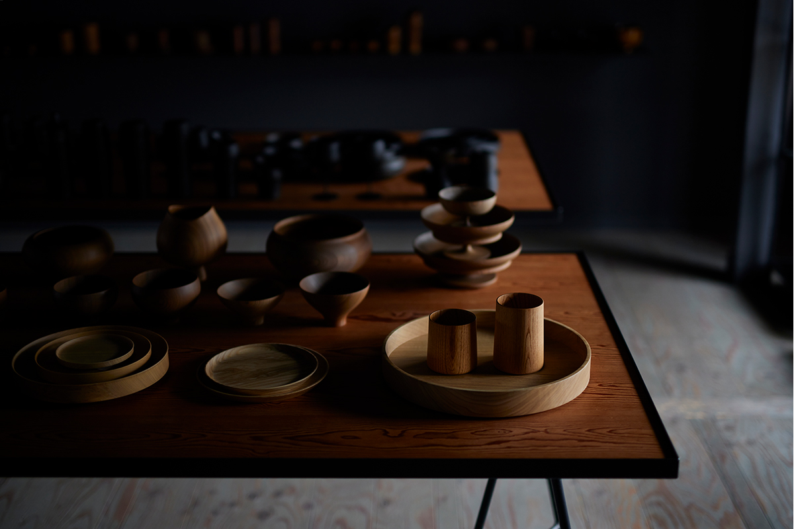
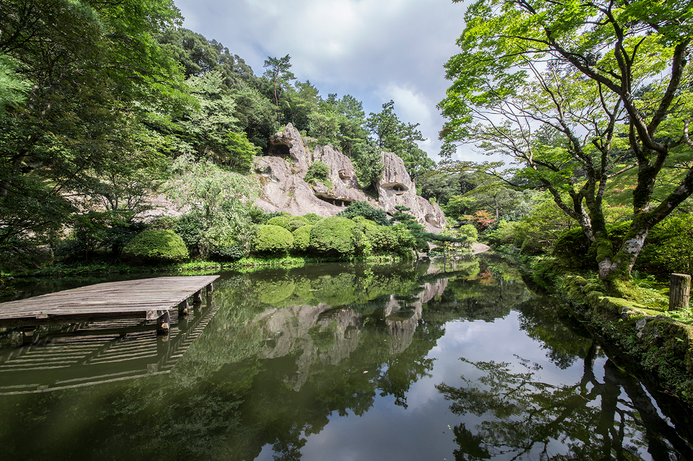

Префектура Исикава · Кага, онсэн Ямасиро · где остановиться
Beniya Mukayu: рёкан на холме Якусияма, где отдыхают онсэном, травами и тишиной

После продления скоростной линии Хокурику-синкансэн в 2024 году добираться в эти края стало ещё проще. Рёкан Beniya Mukayu стоит на холме над онсэном Ямасиро, и сюда приезжают, чтобы прожить несколько медленных дней среди сада, который меняется с каждым сезоном.
Рёкан
Красота, которую заметил весь мир
Онсэн Ямасиро находится в городе Кага, на юге префектуры Исикава. Над ним поднимается холм Якусияма, когда-то священное место культа горы Хакусан. На его склоне и стоит Beniya Mukayu. Слово «мукаю» в названии рёкана означает «богатство в пустоте», и в этом вся идея места: оставить городской шум внизу и провести время в тишине, среди деревьев горного сада.

История рёкана начинается в 1928 году. Он переезжал внутри онсэна Ямасиро, достраивался, а с 1996 года его проектирует архитектор Сэй Такэяма. Красивые интерьеры и внимательный приём сделали рёкану имя, и в 2009 году его приняли в Relais & Châteaux, объединение, куда входят гостиницы, которые считают одними из самых красивых в мире.


Номеров в рёкане 16, и в каждом своя открытая купальня с водой из источника. Все комнаты устроены так, чтобы впустить внутрь природу снаружи. Татами, сёдзи, бамбук: материалы, которыми в Японии пользуются веками, собраны в современный интерьер, и в нём сразу становится спокойно.
Спа на горячей воде и травах
Отдельно стоит сказать о Spa Entei внутри рёкана. Монахи с холма Якусияма когда-то лечили людей горячей водой и травами, и спа продолжает эту традицию: процедуры с водой онсэна и лекарственными растениями приводят тело в порядок.

Тем, кто остаётся на две ночи и больше, рёкан предлагает свои программы. Вместе с мастерами Кага и соседними лавками онсэна Ямасиро здесь устраивают занятия ремеслом и уроки приготовления японских сладостей, и через них хорошо видно, как живут в этих краях.

Beniya Mukayu
- Адрес
- префектура Исикава, Кага, Ямасиро-онсэн, 55-1-3
- Телефон
- 0120-07-1340 (бесплатный номер в Японии)
- Номера
- 16
- Цены / Вход
- от 58 080 иен за ночь с ужином и завтраком (с налогом и сервисным сбором)
- Заезд / выезд
- 15:00 / 11:00
- Как добраться
- на машине около 20 минут от съезда Катаямадзу скоростной дороги Хокурику, от станции Кага-Онсэн около 15 минут на машине
- Сайт
- mukayu.com
Окрестности
Куда сходить из рёкана: советы хозяев
Онсэн Ямасиро богат продуктами: свежая рыба, местные овощи Кага. В любое время года здесь хорошо поесть. Поэтому хозяева советуют не ограничиваться ужином и завтраком в рёкане, а попробовать вкус Хокурику и в соседних заведениях.

Первым в их списке стоит «Камэ-суши». Здесь готовят суши и сезонные блюда из рыбы, пойманной у порта Хасидатэ, у Канадзавы и у полуострова Ното. Вечером особенно любят «омакасэ», курс из суши и закусок на выбор повара.
«Камэ-суши»
- Адрес
- префектура Исикава, Кага, Ямасиро-онсэн, 17-8-2
- Телефон
- +81 761-76-0556
- Часы работы
- 11:30–14:00 (бронь не позже чем накануне), 17:00–21:00
- Выходные
- понедельник
Для обеда или сладкого хозяева советуют «Сарё Накао», где подают сезонные бэнто и японские десерты. Сидеть здесь можно долго, глядя на красивый сад.

«Сарё Накао»
- Адрес
- префектура Исикава, Кага, Ямасиро-онсэн, Кикёгаока, 4-29
- Телефон
- +81 761-77-0015
- Часы работы
- 11:30–17:30 (последний заказ в 17:00)
- Выходные
- среда, четвёртый четверг месяца
После еды хорошо познакомиться с местным ремеслом. Прямо в онсэне Ямасиро работает мастерская керамики Кутани-яки «Суда Сэйка», которая славится свободным, размашистым рисунком кистью, и там почти наверняка найдётся вещь по вкусу.
Всего в 15 минутах на машине лежит онсэн Яманака, тоже из группы онсэнов Кага. Там стоит заглянуть в GATOMIKIO/1, магазин фирмы Gato Mikio Shouten, которая работает с лаковой посудой Яманака-нури. Вещи здесь одновременно красивы и удобны в деле.

GATOMIKIO/1
- Адрес
- префектура Исикава, Кага, Яманака-онсэн, Короги-мати, Ни 3-7
- Телефон
- +81 761-75-7244
- Часы работы
- 9:00–17:00
- Выходные
- четверг
В конце поездки хозяева советуют побывать в храме Натадэра, связанном с культом горы Хакусан. Он красив в любое время года, а его памятники стоит рассмотреть внимательно.

Храм Натадэра
- Адрес
- префектура Исикава, Комацу, Ната-мати, Ю 122
- Телефон
- +81 761-65-2111
- Часы работы
- 9:15–16:00
- Цены / Вход
- 1000 иен
Фото: Юрико Оно.